مهارة
الحركة
ينهض ويمشي ويدور ليكتشف، بدلًا من الجلوس الطويل.
قريبًا
ألعاب تعليمية تفاعلية بالواقع المعزّز (AR). قوموا، امشوا، واكتشفوا كل عالم.
لماذا كِريوزا؟
تُظهر الدراسات أن كثرة الجلوس أمام الشاشات عند الأطفال الصغار ترتبط بضعف التركيز واللغة وقلّة النوم، وأن الشاشة التفاعلية أمرٌ مختلف. لذلك صنعنا كِريوزا.
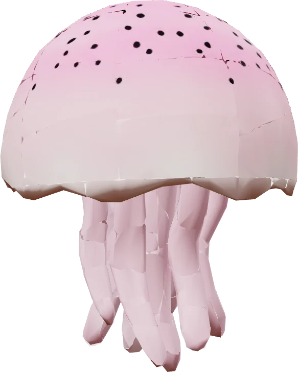
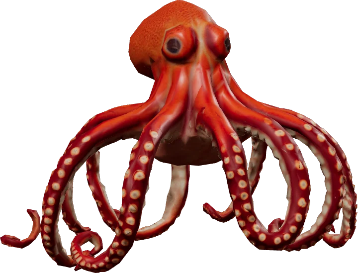
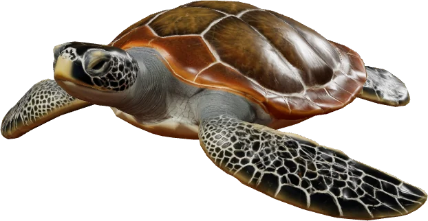
تخرج اللعبة من الشاشة… فيمشي طفلكم ليكتشفهابتقنية الواقع المعزّز (AR)
تعرّفوا على كيو
امشوا معه في عوالم كِريوزا: جدار يُريكم ما يفعله كيو، وجدار آخر للعوالم التي يدخلها طفلكم.
مرّروا لتمشوا
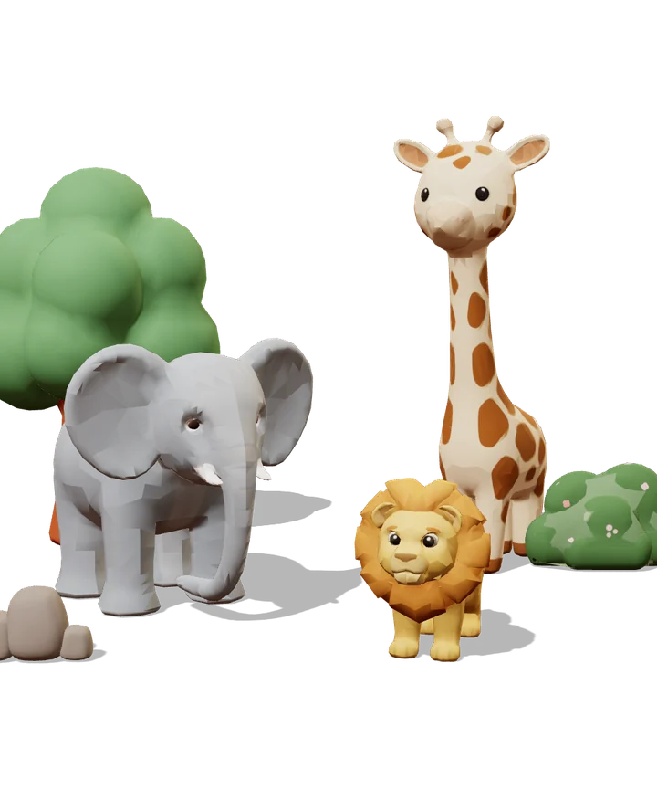
عالم
أصدقاء من الحيوانات يختبئون… وطفلكم يبحث عنهم ويتعرّف عليهم.
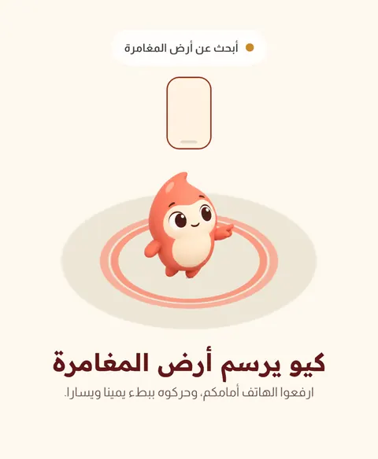
كيو
يستقبل طفلكم عند بداية اللعب، ويلعب معه من أول لحظة.
«أهلًا! أنا كيو، هيّا نلعب»
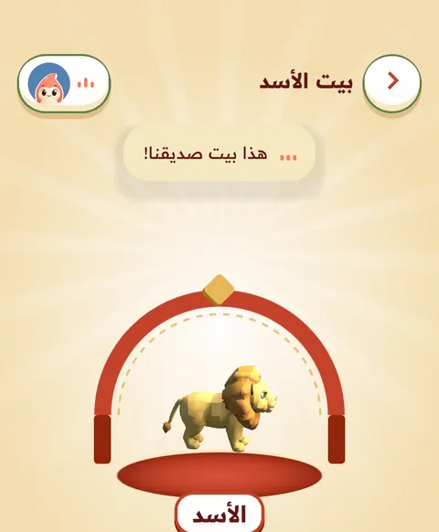
حديقة الحيوان
كل صديق يجده طفلكم ينضمّ إلى حديقته.
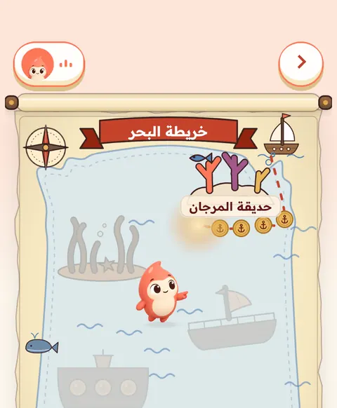
كيو
يقول دائمًا «نحن»: نبحث معًا، ونجد معًا.
«ربّما هو خلفنا! هيّا ننظر خلفنا.»
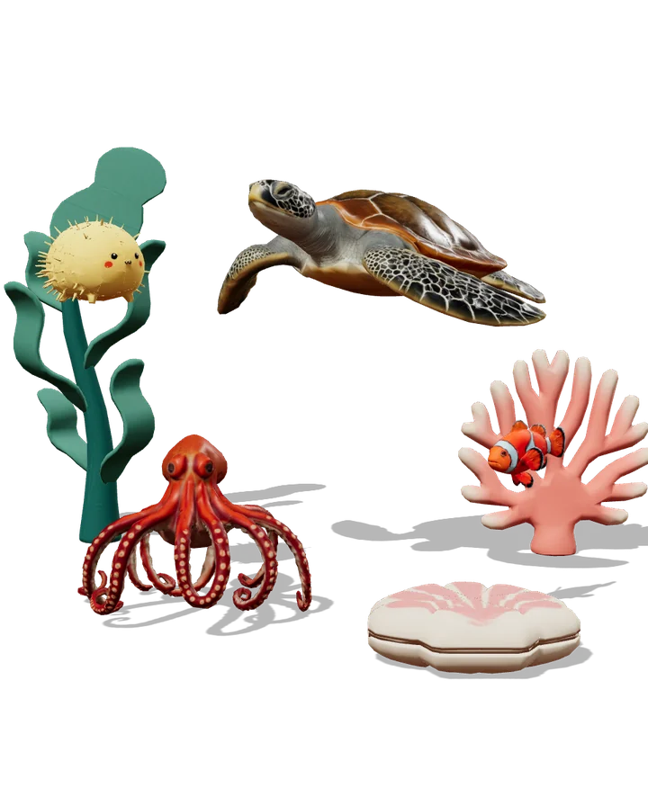
عالم
كائنات البحر وكنزٌ مخفي… ومع كل اكتشاف معلومة حقيقية.
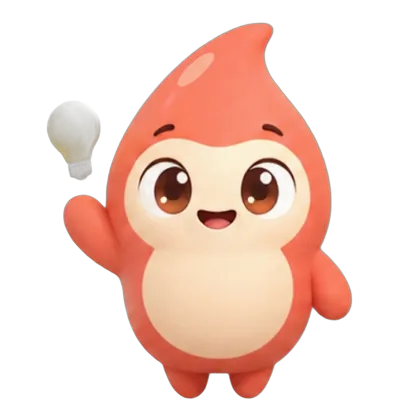
كيو
إذا تأخّر الاكتشاف، يعطيه تلميحًا صغيرًا. لا يوجد «خطأ» في كِريوزا.
«لم نجده بعد؟ لا بأس! هيّا نسمع التلميح مرّة أخرى.»
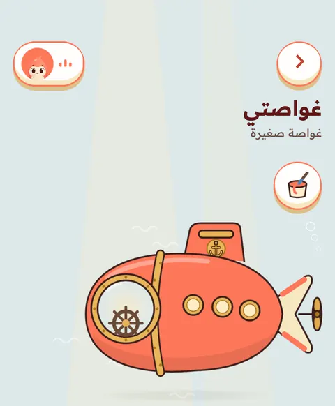
قاع البحر
رحلة تحت الماء، وكنز ينتظر من يجده.
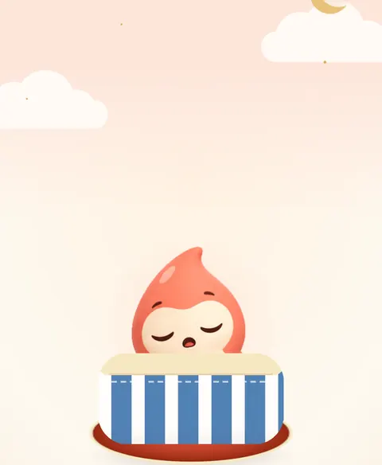
كيو
يحتفل بكل اكتشاف، وفي نهاية اللعبة يتعب فينام. وتبدأ اللعبة التالية عندما تقرّرون أنتم.
«تعبتُ قليلًا. سأنامُ قليلًا، ونلعبُ بعدَ قليل.»
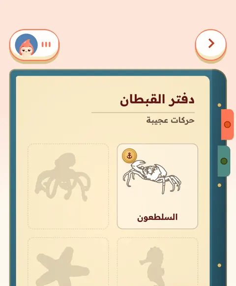
قاع البحر
يحفظ طفلكم في دفتره كل كائن وجده.
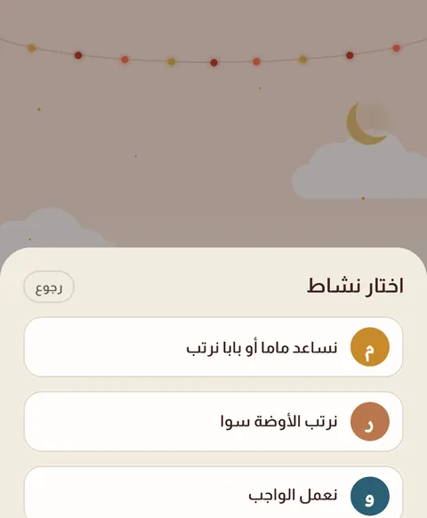
كيو
قبل أن ينام، يخبره بنشاطٍ حقيقي تختارونه أنتم، ويدعوه ليحكي لكم ما وجده.
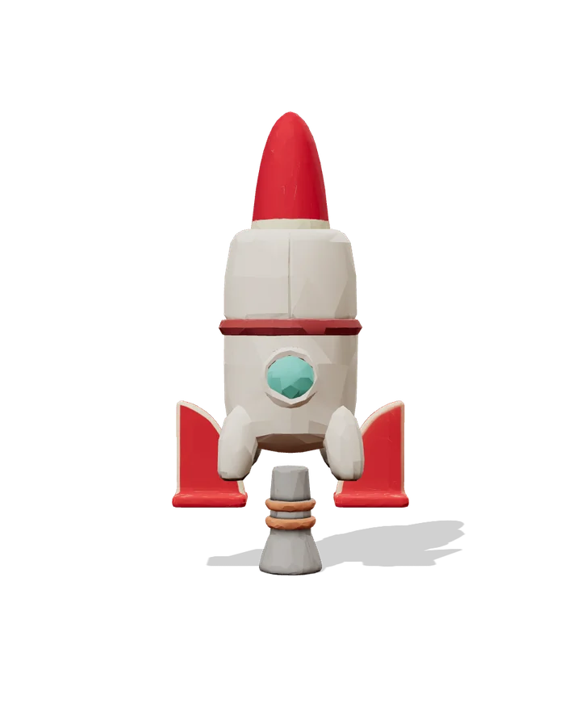
الفضاء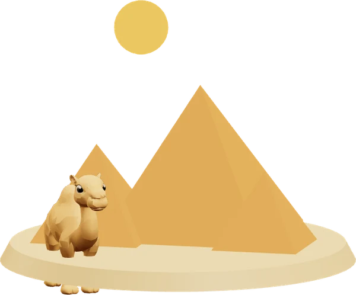
الأهرامات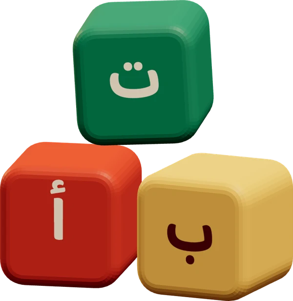
الحروف العربية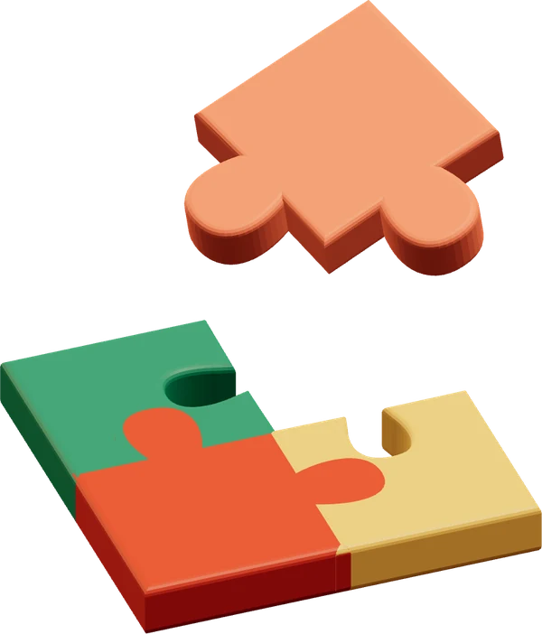
ألغاز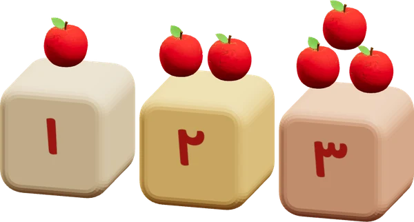
العدّ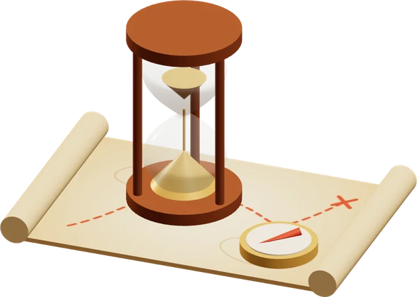
رحلة عبر التاريخمرّروا لتنظروا حولكم، ثم اضغطوا حيث تظنّون أنّ صديقنا مختبئ.
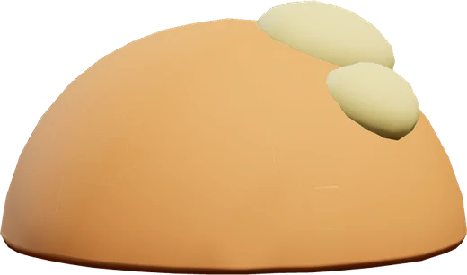
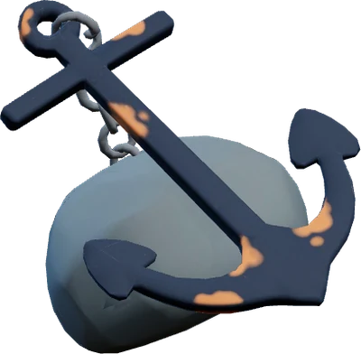
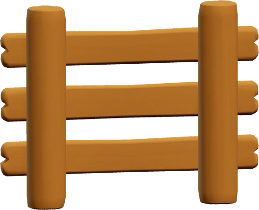
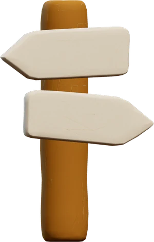
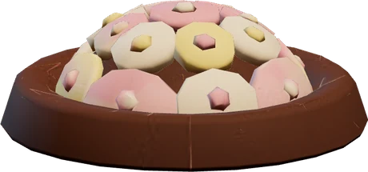
ابحثوا عنسمكة المهرّج
هل نبدأ؟ هيّا نبحث!
لمحة صغيرة هنا على الموقع. في اللعبة الحقيقية يمشي طفلكم ويبحث بتقنية الواقع المعزّز.
ماذا يكتسب طفلكم
كل لعبة في كِريوزا مبنية حول شيء واضح يتعلّمه الطفل.
مهارة
ينهض ويمشي ويدور ليكتشف، بدلًا من الجلوس الطويل.
مهارة
يسمع الدليل من كيو، ويتذكّره وهو يمشي ويبحث.
معرفة
يتعرّف على الحيوانات، ومع كل اكتشاف معلومة حقيقية عنها.
مهارة
فوق، تحت، بجانب، خلف: كلمات يتعلّمها وهو يتحرّك.
معرفة
يجد كائنات البحر، ويسمع معلومة حقيقية عن كلٍّ منها، ويحفظ اكتشافاته في دفتره.
مهارة
مع كل اكتشاف معلومة حقيقية صغيرة، يسمعها ويتذكّرها.
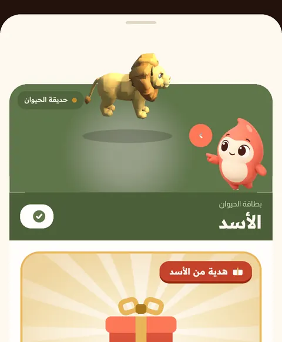
مهارة
يقدّم هدية لكيو، ويهتمّ بالأصدقاء الذين وجدهم.
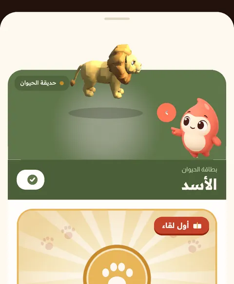
مهارة
يسمع عربية واضحة في كل لعبة، فتزيد كلماته.
مهارة
كل اكتشاف صغير يبني ثقته، ويجعله يسأل: وماذا بعد؟
ومعرفة جديدة
كل لعبة جديدة عالمٌ جديد، وأشياء جديدة يكتشفها.
لعبٌ متوازن
لعبة قصيرة يمشي فيها طفلكم ويبحث ويكتشف، بالمدة التي تختارونها.
يُفضَّل اللعب في مساحة واسعة خالية، وأحد الكبار قريب.
بعد كل لعبة، وقت للحركة بعيدًا عن الشاشة، ونشاط حقيقي يختاره أحد الوالدين.
يحتفل كيو ثم ينام بهدوء. لا عدّاد، ولا ضغط، ولا رسائل تستدعي الطفل إلى اللعب.
لا يفتح اللعبة التالية إلا أحد الوالدين. وحدّ اللعب اليومي واحد للجميع، باشتراك أو بدونه، ولا يُباع أبدًا.
مميزات كِريوزا
لا إعلانات ولا نوافذ منبثقة داخل اللعبة.
لا نرسل للطفل إشعارات، ولا شيء مصمّم ليشدّه إلى الشاشة.
يُعالَج مشهد الواقع المعزّز على الهاتف فقط، ولا يُسجَّل منه شيء ولا يُحفَظ ولا يُرسَل.
تختارون وقت اللعب، ثم يرتاح كيو. واللعبة التالية بإذنكم.
عندما تنتهي اللعبة، يحين وقت الحركة بعيدًا عن الشاشة.
الحركة، والاستماع، وكلمات المكان، والتذكّر، والمشاركة.
التطبيق باللغة العربية، إيمانًا منّا بأهمية اللغة العربية والحفاظ عليها.
مغامرات بحث واكتشاف، مع صديقٍ يفرح بكل اكتشاف.
الإعدادات ووقت اللعب خلف بوابة لا يفتحها إلا الأهل. طفلكم يلعب، وأنتم تقرّرون.
ما هي كِريوزا؟
كريوزا (كِريوزا) تطبيق للأطفال على الهواتف الذكية، يقدّم ألعابًا تعليمية تفاعلية بتقنية الواقع المعزّز، ويتحدث العربية فقط. يرافق الطفلَ فيه كيو، صديق اللعب الذي يرشده، فيتحرك الطفل ويبحث ويكتشف ويتعلم شيئًا جديدًا في كل لعبة. صُمّم لأولياء الأمور الذين يريدون لأطفالهم شاشة مختلفة، لا شاشة أقل. لا إعلانات فيه، ويعمل الواقع المعزّز داخل الهاتف فقط، ولا يُسجَّل أي فيديو أو صورة ولا يُحفظ.
كريوزا تطبيق ألعاب تعليمية تفاعلية للأطفال بالواقع المعزّز، يتحدث العربية. يرشد كيو، صديق اللعب، الطفلَ وهو يتحرك ويبحث ويكتشف.
يعمل كريوزا على الهواتف الذكية التي تدعم الواقع المعزّز. يبدأ على أندرويد، ويصل قريبًا إلى آيفون.
نعم، تحميل كريوزا مجاني.
لا توجد في كريوزا أي إعلانات، ولا إشعارات تدعو الطفل إلى العودة للعب. يعمل الواقع المعزّز داخل الهاتف فقط، ولا يُسجَّل أي فيديو أو صورة ولا يُحفظ.
في كل لعبة يتعلم الطفل شيئًا جديدًا وواضحًا، ويتحرك ويبحث وينتبه للتفاصيل لكي يجد ما يدلّه عليه كيو. ومع كل لعبة جديدة عالمٌ جديد يكتشفه.
نعم، كريوزا يتحدث العربية فقط، صوتًا وكتابةً. يسمع الطفل كيو وهو يرشده خطوة بخطوة.
تذكرة أوائل العائلات
ننطلق قريبًا. اضغطوا الزر وأرسلوا الرسالة الجاهزة، وسنخبركم أوّل ما نطلق.
يفتح الزر تطبيق البريد لديكم برسالة جاهزة إلى support@keryoza.com. نستخدم بريدكم لإبلاغكم بالإطلاق والألعاب الجديدة فقط، ولا نشاركه مع أحد، ونحذفه متى طلبتم.
مغامرة في كل مكان
Different Screen NOT Less Screen
أسئلة؟ راسلونا على support@keryoza.com